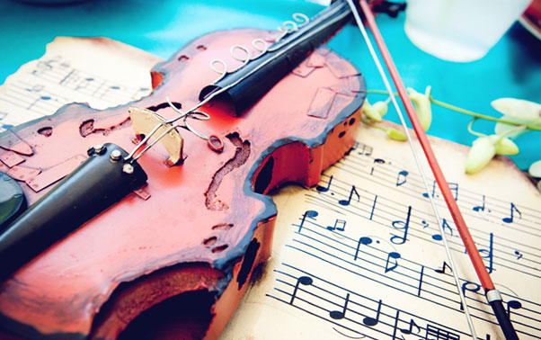

Muzica
Muzica (din grecescul mousikē) este arta combinării notelor în succesiune și simultan într-o formă plăcută estetic, organizarea ritmică a acestor note și integrarea lor într-o lucrare completă.
Melodia este o combinaţie de sunete care prin înălţimea, durata şi succesiunea lor vor forma
un cântec.
Armonia este o altă combinaţie de sunete care prin unirea lor spontană formează acorduri.
Pe portativ se înscriu principalele semne ale notaţiei: cheile cu armurile corespunzătoare,
măsurile, valorile de note, pauzele şi alteraţiile. După necesitate întâlnim în notaţia muzicală
portativul simplu utilizat pentru muzica la o voce sau portativul dublu, întâlnit în literatura
pentru pian, orgă şi clavecin.
Aceste note sunt puse pe cele cinci linii orizontale şi paralele, linii care se numesc portativ.
